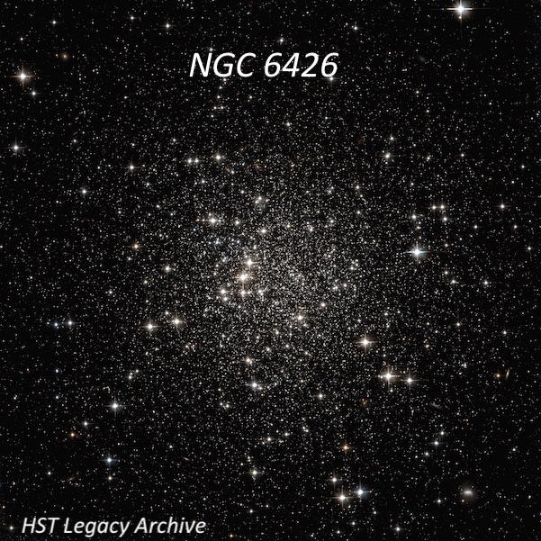
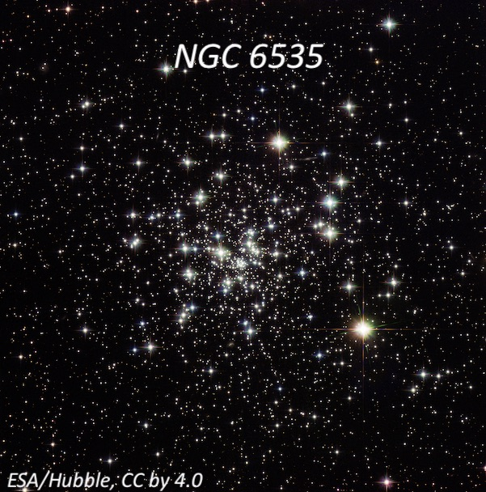
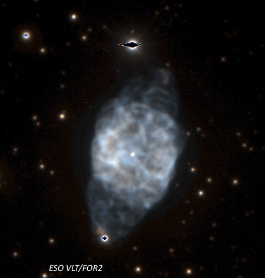
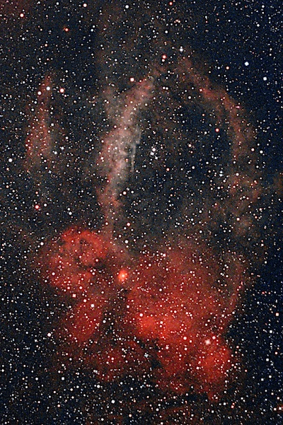

Chew's Ridge (MIRA) on Aug. 23, 2003
The Mars opposition of August 28, 2003, was the closest one to Earth (34.6 million miles) in nearly 60,000 years! To avoid the crowds expected at most of the local sites, Dennis Beckley and I decided to head to Chew's Ridge to experience the legendary seeing at the crest of Tassajara Road (5000+ ft) in the Ventana Wilderness near the Mira observatory.
Dennis and I had both observed there a couple of times (my first time was 19 years ago) and had been impressed with the sub-arcsecond seeing (average has been measured at 1.1"). Long-time planetary observer Joel Goodman also joined us.
A few years back I made arrangements to observe inside the observatory gate with imagers Chuck Vaughn and Robert Bickel. The drive takes nearly 3.5 hrs from my home in Albany with the last several miles on a beat-up washboard road (if you've been to Tassajara Hot Springs you know what I'm referring to) -- only to discover that I had left my struts in the garage! Needless to say, this time I was more careful packing.
Dennis had made arrangements so we would be able to get inside the locked gate but this proved unnecessary, as the gate was open and a "fire" exhibit was advertised at the MIRA Observatory. We set up just off the road below the unmanned fire lookout tower, figuring this would be a quiet night. Not quite. A dozen or so observers from the Santa Cruz area rolled in as it was getting dark and took over the surrounding hillside.
For the first several hours of darkness, conditions were superb and I was easily using 500×, enjoying the detailed view of unusually bright Mars (-2.9 magnitude) with a relatively large diameter of 25 arcseconds. But I also spent a lot of the time observing faint globular clusters and planetary nebulae with my 18-inch f/4.3 Starmaster. A few examples:
NGC 6426
17 44 54.7 +03 10 13
Size: 3.2', Magnitude: 11.2V
NGC 6426 is an ancient, metal-poor halo globular with a distance of ~67,500 light years. Using 160×, it appears fairly faint with an irregular triangular outline, 2.5' diameter. There is only a weak concentration, though the surface has a patchy, irregular appearance with a few faint stars superimposed. At 435×, the brightest resolved star is at the northwest edge. A few other stars are collinear in the halo along the western side. The slightly brighter core is offset east of the geometric center and just resolved into several extremely faint stars at moments. A total of up to ten 15th and 16th magnitude stars are barely resolved.

NGC 6535
18 03 50.6 -00 17 49
Size: 3.6', Magnitude: 10.6V
Using 435×, this globular appears fairly faint, ~3' diameter with an irregular outline, and just a weak concentration. A trio of mag 13-13.5 stars is easily resolved on the west edge and the middle star has two close mag 14.5 and 15.5 companions. With careful viewing, about a dozen extremely faint stars sparkled over the central glow, often popping in and out of averted vision. At 538×, the cluster just breaks up into a swarm of extremely faint stars in steady moments.

NGC 6539
18 04 49.7 -07 35 09
Size: 6.9', Magnitude: 9.8V
At 323×, NGC 6539 appears fairly faint, round, pretty diffuse with only a broad, fairly weak concentration. A mag 12.5 star is off the NW side and a few mag 13 stars are off the SW edge and further off the SE side. A couple of 15th-mag stars are resolved between the two brighter stars on the west side. At 435×, the surface was quite mottled and seemed on the verge of resolution but only one or two extremely faint stellar sparkles are intermittently visible.
NGC 6760
19 11 12.0 +01 01 50
Size: 6.6', Magnitude: 9.0V
Using 323×, this globular appears moderately bright, round, nearly 4' diameter, broad concentration to a slightly brighter 2' core. A half-dozen stars resolve around the periphery with several of these on the southeast and east side. With averted vision, a few additional stars sparkle over the center. At 538×, 10-12 stars resolve around the edges of the halo and the core is very lively and on the verge of resolution.
NGC 6905 = Blue Flash Nebula
20 22 23.0 +20 06 16
Size: 47" × 37", Magnitude: 10.9V
This is a beautiful planetary at 320x and 538x. The mag 15.7 central star is easily visible continuously at these powers. The interior seems unevenly lit and there appears to be a very slightly darker "hole" to the north of the central star. Two stars, one of 11th-mag off the north edge and one of 12th-mag just off the south edge, bracket the disc. The planetary is slightly elongated N-S in the direction of these stars.

Sharpless 2-157 = Lobster Claw Nebula
23 16 00 +60 28
Size: 60' × 50'
Sh 2-157 is a beautiful object with a 31mm Nagler and OIII filter, reminiscent of one of the sections of the Veil as viewed in a small scope. The main N-S shallow arc, convex to the east, spans a large percentage of the 1.1° field. The strip widens at the S end and is less distinct although it contains the bright knot LBN 537 = Sh 2-157a, which surrounds a mag 11 star (easy without filter). A much fainter western section (roughly 20' W) also extends N-S, passing through a scattered group of stars. At the south end, it appears to merge with the eastern branch.
